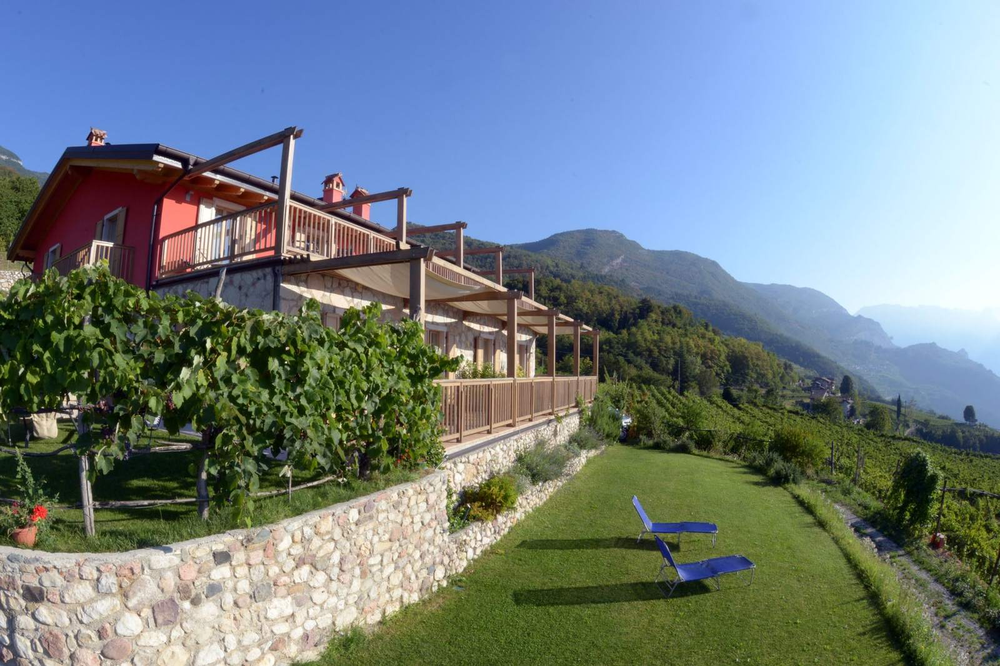
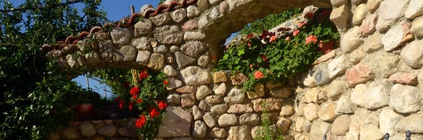
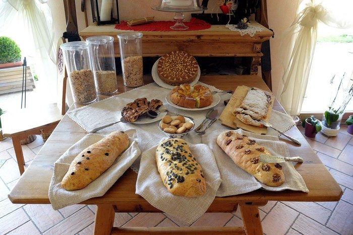
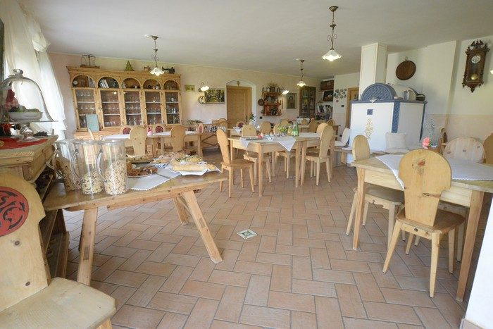
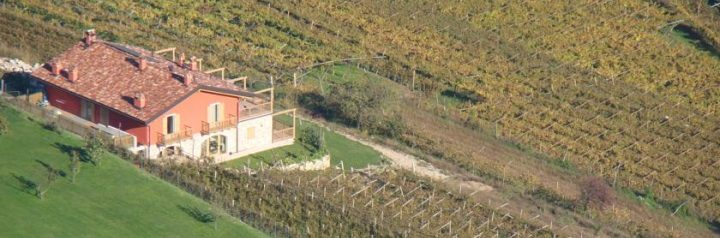

Dove il temposembra fermarsi
Agriturismo con pernottamento e prima colazione tra i vigneti e i boschi di Pedersano, in Val Lagarina, a 450 metri di altitudine.

Pedersano di Villa LagarinaBenvenuti a Maso Spezial
Non esiste la fretta: si può assaporare ogni istante e ascoltare un battito d'ali di farfalla o il cinguettio degli uccelli.
Ci caratterizzano la cura dei dettagli e dei nostri ospiti e l'arredamento in stile trentino di fine Ottocento e inizio Novecento, con i mobili restaurati da noi. Lo Speziale era l'erborista medievale: la passione per le piante officinali ha dato il nome al maso.

Sette stanze, sette erbe
Ogni stanza ha il bagno, il riscaldamento a pavimento, un terrazzo o un balcone sulla Val Lagarina, e il nome di un'erba medicinale con i suoi colori. Toccatene una.
Le camere sono disponibili dalle 16 del giorno di arrivo alle 10 del giorno di partenza. Per i bimbi sotto i tre anni c'è la culla.
La colazione di Valentina
Prodotti tipici trentini e di malga, pane, torte, strudel e confetture fatti in casa. D'estate si fa colazione all'aperto, nel "cortile dell'energia"; d'inverno ci si scalda la schiena sulla stufa a ole in mezzo alla sala.
Nella sala, il mobile di una farmacia del Settecento, una piccola biblioteca con libri sul Trentino e di erboristeria e un angolo con i giochi per i bambini.


Erbe, yoga e benessere
Una vacanza al maso si può unire ai corsi tenuti da noi durante l'anno, nella natura dei vigneti o in montagna. Su prenotazione, anche per gruppi di almeno quattro persone.
Yoga, Pilates e Mindfulness
Lezioni in piccoli gruppi o individuali, anche una "full immersion relax" con yoga al mattino e pilates la sera.
Percorso erboristico, dai 9 ai 99 anni
Uscite all'aperto per riconoscere le erbe officinali e commestibili, i loro nomi e come si usano in cucina e per la salute.
Naturopatia e Fiori di Bach
Consulenze di naturopatia e iridologia, floriterapia di Bach, riflessologia plantare e massaggi olistici e rilassanti.
La fattoria didattica
Corsi per conoscere la nostra azienda: i vigneti e le erbe officinali, come la lavanda che diventa olio essenziale.
Vi accompagnano Bruno, erborista e naturopata, scrittore e poeta, e Valeria, naturopata e iridologa, istruttrice di Yoga e Pilates.
Dove siamo
Località Pozze 1
38060 Pedersano di Villa Lagarina (TN)
Seguite le indicazioni per la località Cesuino.
Apri in Google Maps
Scriveteci le vostre date
Per una stanza, un soggiorno più lungo o un corso: chiamateci o scriveteci, vi rispondiamo noi.